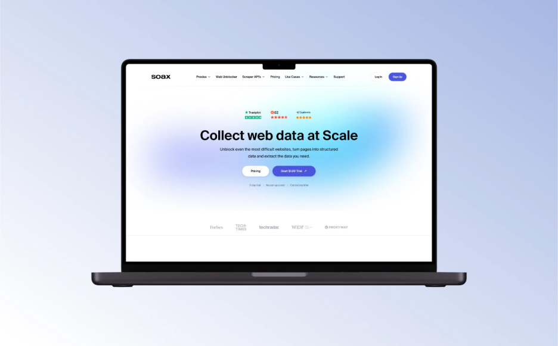
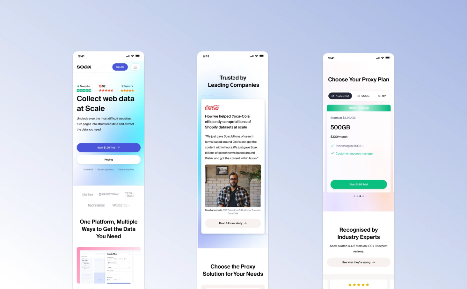
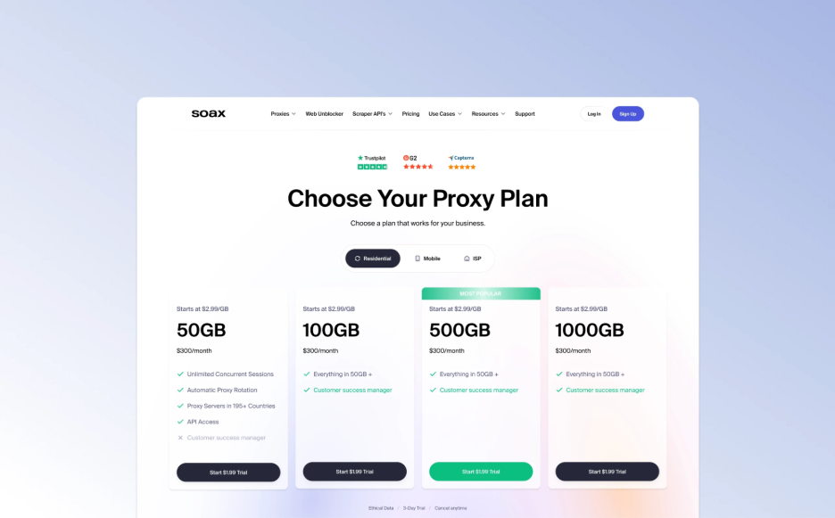
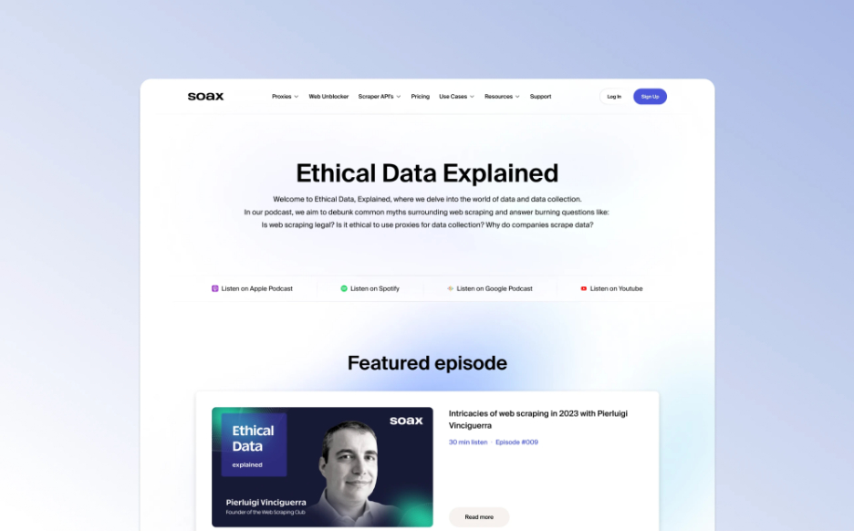

SOAX: 30 pages, one calm system
Overview
SOAX is an award-winning data-collection platform — proxies, web scraping, data extraction, API automation — used by companies that need web data at scale. I revamped its entire web presence.
My role
Lead UX/UI designer and digital product strategist. Page architecture, the design system, every page on desktop and mobile.
Team
Timeline
Jul 2023 – Jan 2024
via Toptal

The brief
Proxy networks are a technical product sold to two very different readers: an engineer comparing IP pools and APIs, and a buyer who needs to know it's legal, reliable, and trusted by companies they've heard of. SOAX's site had grown page by page and spoke to neither well.
The ask was a revamp of the whole web presence — not a new homepage, but a system that could carry thirty-plus pages and the next thirty without drifting.
System first
I started with the parts that repeat: a type scale that stays readable in long technical copy, a restrained palette with one gradient accent for the moments that matter, a layout grid that works for a hero, a pricing table, and a blog post alike, and an icon set for the product family. Every page after that was assembly, not invention.
Mobile wasn't an afterthought. Each page was designed for phones alongside desktop, and the components were built to reflow rather than be redesigned.

The pages that do the selling
Pricing
Pricing was the page with the most opinions. The result is deliberately boring: four plans, a residential / mobile / ISP toggle, the feature list aligned so a reader can scan down a column, and the recommended plan marked once. Traffic-based pricing is confusing enough without the layout adding to it.

Resources and the podcast
SOAX runs a podcast about ethical data collection — a smart move for a company whose category gets side-eyed. The resource pages give it a proper home: a featured episode, platform links, and the same visual language as the product pages, so trust built on one page carries to the next.

Outcome
Thirty-plus pages shipped on one system, responsive from the start, with a component library the marketing team could keep building from. The designs are still in use today. I was brought in as a lead designer and strategist rather than a pair of hands, and that is how the work went: decide the system, then let it do the heavy lifting.
Screenshots are from a portfolio export; higher-resolution ones are on the way.